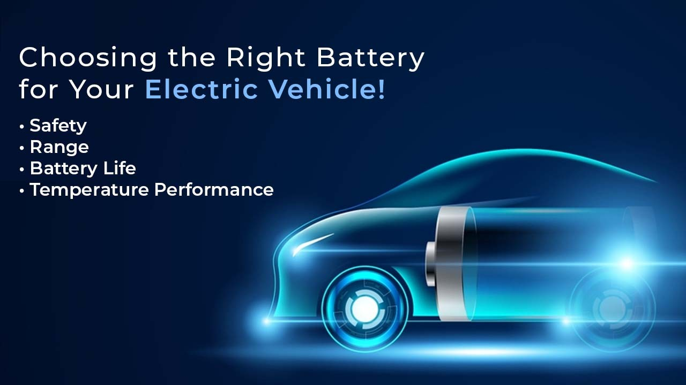

As the world increasingly embraces the urgency of environmental protection and shifts towards sustainable transportation, electric vehicles (EVs) have taken center stage. The allure of new energy vehicles lies not only in their eco-friendliness but also in the sense of future and technology they embody. However, as the popularity of EVs continues to rise and challenges emerge, prospective buyers are now paying closer attention to the cost performance of these vehicles.
This article focuses on the critical aspect of battery choice for pure electric vehicles, offering insights to help consumers make informed decisions while contributing to a sustainable future.
The Burning Question: Battery Safety
In recent years, the safety of pure electric vehicles has come into question due to various fire incidents involving different brands and models. The common denominator in these incidents is the battery used. In the world of pure EVs, there are two primary battery technologies: ternary lithium batteries and lithium iron phosphate batteries. This article aims to compare these two battery types from various perspectives to help potential buyers choose wisely.
1. Cost: The Price of Performance
Ternary lithium batteries, technically known as nickel-cobalt lithium manganate, come at a price tag roughly 2.5 times higher than that of lithium iron phosphate batteries. This substantial cost difference is attributed to the presence of precious metals like nickel and cobalt in ternary lithium batteries. Additionally, the price of ternary lithium fluctuates significantly in response to market conditions. Consequently, when opting for a car with ternary lithium batteries, you should expect a higher upfront cost compared to a similar vehicle using lithium iron phosphate batteries.
2. Energy Density: Powering the Range
In terms of energy density, both in mass and volume, ternary lithium batteries outshine their lithium iron phosphate counterparts. This means that ternary lithium batteries can store more energy in the same unit. As a result, EVs equipped with ternary lithium batteries typically offer higher range capabilities.
3. Safety Performance: The Heat of the Matter
Safety is paramount when it comes to EVs, and the choice of battery plays a crucial role. The crystal structure of ternary lithium differs from lithium iron phosphate, affecting their safety performance. In the event of thermal runaway (a condition where the battery temperature escalates uncontrollably), ternary lithium batteries can experience smoke, fire, or even explosion with a violent reaction. In contrast, lithium iron phosphate batteries exhibit a higher decomposition temperature, typically above 500°C, and, if compromised, they emit smoke but rarely catch fire. The reaction in such cases is comparatively mild. In terms of safety, lithium iron phosphate batteries are the preferable choice.
4. Cycle Life: Prolonging Battery Use
Cycle life refers to the number of charge and discharge cycles a battery can endure while retaining 80% of its initial capacity. In this regard, lithium iron phosphate batteries excel. They can generally endure over 2,000 cycles, with some lithium iron phosphate batteries boasting impressive cycle lives of up to 3,000 cycles. This extended cycle life means longer battery usability.
5. High and Low-Temperature Performance: Battling the Elements
Battery performance can be greatly affected by temperature, and both types have their strengths and weaknesses. Lithium iron phosphate batteries suffer from poor charging and discharging performance in low-temperature environments, with their lower limit being around -20°C. In contrast, ternary lithium batteries offer a wider temperature window, functioning down to -30°C. At -20°C, the discharge capacity of ternary lithium batteries remains at about 70-90%, while lithium iron phosphate batteries drop to 50-70%. In cold climates, the power output of lithium iron phosphate batteries significantly diminishes.
Choosing the Right Battery for Your Electric Vehicle

In summary, when choosing between ternary lithium and lithium iron phosphate batteries for your electric vehicle, consider the following factors:
1. Safety: Lithium iron phosphate batteries offer superior safety, particularly in extreme situations like thermal runaway.
2. Range: Ternary lithium batteries provide higher energy density, translating to greater driving range.
3. Battery Life: Lithium iron phosphate batteries have longer cycle lives, reducing the need for replacement.
4. Temperature Performance: Consider the climate in your area and the impact on battery performance. Ternary lithium batteries perform better in extreme cold conditions.
When selecting your EV, it's crucial to prioritize safety, driving range, battery life, and low-temperature performance. Understanding the specific battery type used in the vehicle you're interested in is vital, and you may need to seek information from official sources or experts.
Ultimately, the choice between ternary lithium and lithium iron phosphate batteries should align with your driving needs and preferences. Safety, reliability, and sustainability are key factors to consider, and with the right knowledge, you can make an informed decision that best suits your requirements while contributing to a greener and more sustainable future.